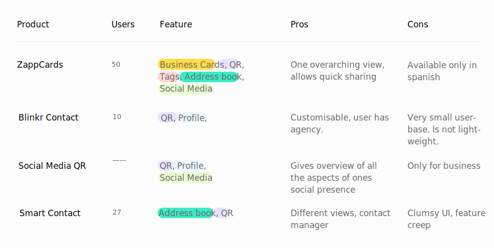
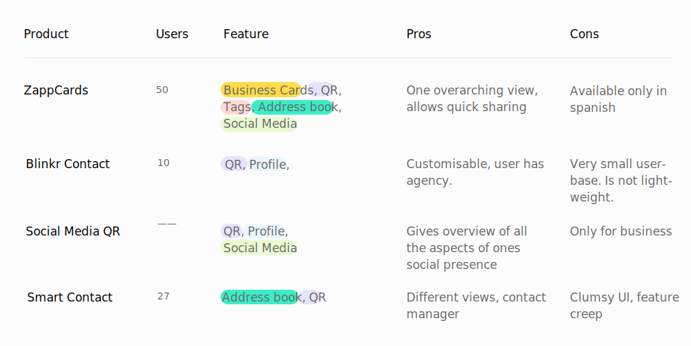

Handl - Swapping Contacts Quicker
Winner of Convergence Innovation Competition, Georgia Tech!
UXD Aug'19 - Dec'19 My Role - Researcher & Experience Designer
Overview
Swapping contact with someone new in cross cultural contexts or social gatherings can be unncessarily clumsy!
Suppose you are at a part or attending a conference or in a networking event. You can carry your business card, resume, etc., but we can agree that we have to hesitantly ask the other person if they are on Linkedin or Instagram or if we can have their number. Not just that, cultural and language barrier can make the process more complicated.
How did we solve this?
I came up with a non-native mobile app that enabled people to exchange contacts and their social media handle based on nearby discoverability in an asynchronous manner. Users can save their social media handles and contact information in their profile section which will basically act like digital business card. People can control what they want to share on the go and use the same profile for different situations.
01
Organise contacts and social media accounts in one place.
02
Discover nearby people. Share contacts asynchronously.
03
Save the context and digital business cards!
Full story - Informing the Design
4 Sprints, 9 Interviews, 3 Brainstorming Sessions, 4 Iterations

Identifying the Pain-points and understanding the user!
We began with a hypothesis!
Once in a while exchange of contact or connecting with someone, might not seem like an issue, but in social gatherings meant for networking where people meet new people, the number of social media choices available to people can cause decision lag, distraction, and hassle. We conducted primary and secondary research to test our hypothesis before setting out to design.
First, things first - verifying the hypothesis!
(Semi-structured interviews)
We conducted semi-structured interviews with 9 users between the ages of 22 and 29. All these users were students and were new to the city, looking to network for jobs and some often attended academic conferences.
The interviews helped us understand our users. And from here we got our persona!
Next, we set out to see if there are solutions out there!(Comparative Analysis)
We started with comparative analysis and studied the existing platforms and how they make the exchange of contact information easier. Although these apps catered only to their own services, the study helped us understand their approach and identify problems and opportunities.
We also studied apps which tried to cater to all the platforms together and emphasized on easier exchange. Most applications of this kind were business card focused and lacked any user-centred approach in their solutions.
 

Learnings from the comparative study!
Consolidated Design Implications - Features, Do's & Don'ts
Defining the Design Guidelines
The biggest challenge for the team members was to not jump on the tech solution and let the research inform the solution. We came up with a design implication framework to guide the team.
Then we started brainstorming user journeys, which was super complex given we wanted to make a decision for first time users. I led a 5 hour brainstorming session where we fleshed out details of happy and unhappy paths!

Are we headed in the right direction ? Quick low fidelity prototyping and feedback session with 2 users!
After creating paper prototypes, I tested the flow with the developers and braisntormed the nitty gritty details. Once we finalised it, I created a low-fidelity prototype to test with the users. The goal at this stage was to see if people found this solution helpful.

Positive feedback with a few new insights!
Working on the feedback, it was time to create high-fidelity prototype, and test it with the users
For the first iteration I focused on designing the core features and flows of the application so that we could test if the design was simplifying the process. I used Adobe XD to create the hi-fidelity prototype.

Testing the high-fidelity prototype
User Testing Process
My teammate and I conducted think-out loud sessions with 6 users with different goals of networking. We introduced the goal and the concept and described the activity to help users ease up. We then described the scenario, and let them use the app while thinking aloud. Upon completion of the tasks, we asked them to reflect and fill up a questionnaire.
Iteration 2 // Refining On-the-go contact sharing. Added control over granular contact information.

Iteration 2 // Removed ambiguities from the business card preview. Added call-to-action on the preview card.

Iteration 2 // Redesigned the contact saving buttons based on feedback.

Final Prototype
We made changes in visual design and some of the flows addressing the concerns and evidences from the user testing. The final prototype shows nearby users who can readily share their information.
As a final outcome, we reduced the time required to swap contact by 50% by eliminating the typing and reducing search time. Our app also won Convergence Innovation Competition, organised by Institute for People and Technology, Georgia Tech.
Lessons Learned
Storyboarding any journey, either for an existing situation or a new solution can bring up very important subtle issues that one might not otherwise anticipate. In this project, we drew a lot of stories for different settings and contexts to help the team empathize with different user personas. The storyboarding was also necessary to have the entire team on the same page especially when we had three developers and one designer.
We also realized that an easy and efficient task is not necessarily the one that takes less time but it is also about cognitive load. Even if we do not reduce the task time drastically, reducing the inertia, frustrations and a feeling of smooth completion of task matters.